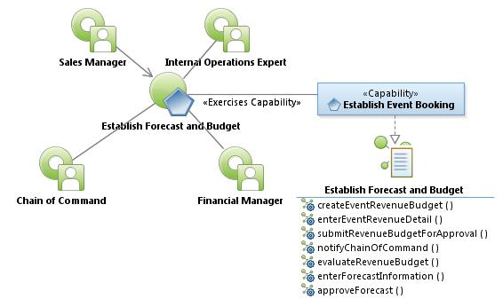
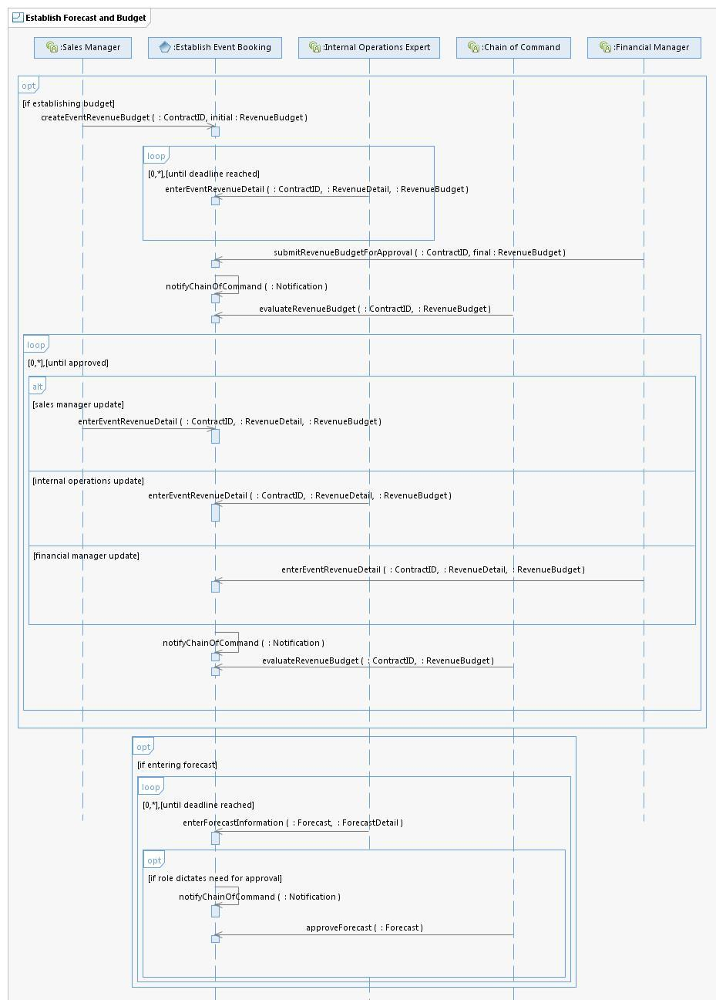

|
Establish Forecast and Budget Use Case Specification
Select to enlarge...

Establish Forecast and Budget Use Case Model
|
Scope: The Sales Manager and Internal Operations Experts use
the system to enter events as forecast items up to five Fiscal Years in
advance. Forecasts use Fiscal Year boundaries modifiable at any time.
Budgets also use Fiscal Year boundaries and cannot be modified once
approved by Chain of Command. The Budget and Forecast includes all
estimates for an event for each of the revenue categories (facility
gross rental, credit food and beverage, room night credit, facility
net, damages, equipment rental, technical services, utility services,
telecom, general labor, security, garage daily, garage validation,
garage contract, garage total, catering, audio visual, rental, scooter
rental, retail sales, shoe shine, and other concessions). The system
must have the ability to add new Revenue Categories. [Note: The Budget
is submitted to the City of Austin Budget Office in May and is approved
by September.]
Select to enlarge...

Establish Forecast and Budget Sequence Diagram
|
Table of Interface Descriptions
| Type/Interface | Description |
|---|
FS034
Establish Event Booking/
createEventRevenueBudget |
The Sales Manager (or designee) uses the system to enter the Event
Revenue Estimate to include account name, event name, status (prospect,
tentative, definite, unscheduled/bluesky), event year, space used,
location/unit number (Austin Convention Center, Palmer Event Center,
Library, etc.), event type (convention, consumer show, conference, food
and beverage event, sporting show, internal), estimated attendance,
number of show days, move-in date, move-out date, revenue categories
include facility gross rental, food and beverage credit, room night
credit, booking credit, equipment rental, technology services, utility
services, telecom, general labor, security, garage daily, garage
contract, garage validation, garage total, catering, audio visual,
rigging, shoe shine, scooter rental, and other concessions). The system
provides the ability to modify the numeration for status, event type,
location/unit number, event type, and revenue categories. |
FS035
Establish Event Booking/
enterEventRevenueDetail |
The Sales Manager, Internal Operations Expert, and Financial Manger
use the system to provide event Revenue Detail to establish estimates
and projections. |
FS036
Establish Event Booking/
submitRevenueBudgetForApproval |
The Financial Manager uses the system to indicate all Event Revenue
estimates are entered and ready for Budget creation and approval. |
FS037
Establish Event Booking/
notifyChainOfCommand |
The system sends a Notification to the Chain of Command indicating the Revenue Budget is ready for review or approval. |
FS038
Establish Event Booking/
evaluateRevenueBudget |
The Chain of Command uses the system to provide approval of the event revenue estimate, thereby creating a Revenue Budget. |
FS039
Establish Event Booking/
enterForecastInformation |
The Internal Operations Expert uses the system to enter their
respective Forecast information to include account name, event name,
status (prospect, tentative, definite, unscheduled/bluesky), event
year, space used, location/unit number (Austin Convention Center,
Palmer Event Center, Library, etc.), event type (convention, consumer
show, conference, food and beverage event, sporting show, internal),
estimated attendance, number of show days, move-in date, move-out date,
revenue categories (facility gross rental, food and beverage credit,
room night credit, booking credit, equipment rental, technology
services, utility services, telecom, general labor, security, garage
daily, garage contract, garage validation, garage total, catering,
audio visual, rigging, shoe shine, scooter rental, and other
concessions). The system provides the ability to modify event type,
location/unit number, event type, and revenue categories. |
FS040
Establish Event Booking/
approveForecast |
The Chain of Command uses the system to approve the Forecast. The
system sends notification to all Internal Operations Experts who have
contributed to the Forecast budget estimate. |
|
{kind=link}
{kind=link}